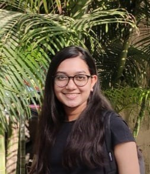

2025 · Climate Econometrics
Effect of ENSO on India's Climate
Regression analysis examining the relationship between ENSO activity and India's surface temperature over two decades.
I am a MSc student specialising in Data Analytics. I take problems apart, look closely at what the numbers are actually saying, and turn that evidence into data driven solutions and evidence based decisions.

More than a CV, a way of thinking about problems.
My coursework spans econometrics, statistical analysis, optimisation, programming and data visualisation, giving me the toolkit to turn a vague question into something I can actually test.
What I enjoy most is the middle part: understanding a problem, finding a sensible way to investigate it, and building data driven solutions that support evidence based decisions.
Regression analysis examining the relationship between ENSO activity and India's surface temperature over two decades.
Linear programming model built in GAMS to optimise a furniture production mix under labour constraints.
The conflict between Russia and Ukraine, examined through World-Systems Theory, Keynesian economics and the Harrod-Domar model.
Additional work across data analytics, econometrics, programming and applied economics.
Analytical methods I apply to a problem.
Software I use to get there.